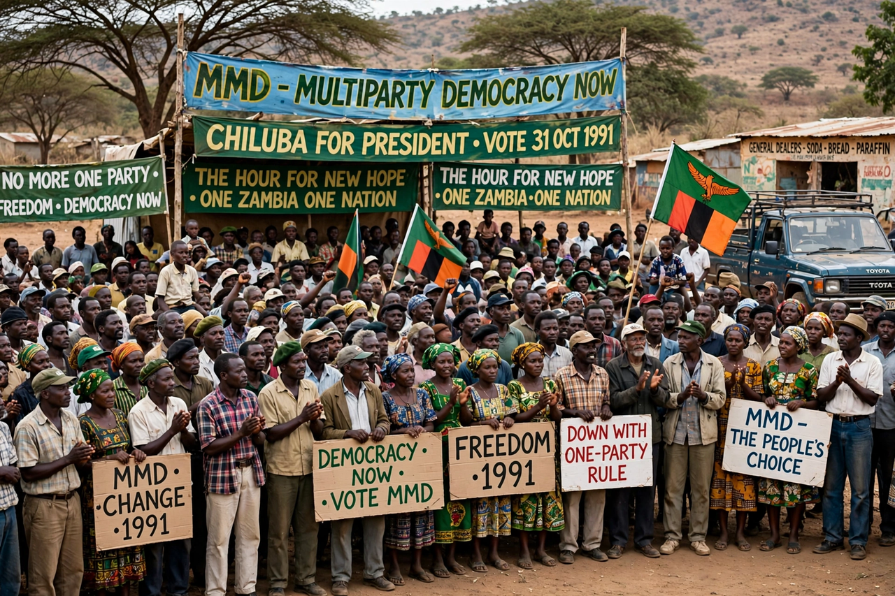

The Movement for Multi-Party Democracy (MMD) is a political party in Zambia. Founded in 1990 as a broad movement to end the one-party rule of Kenneth Kaunda's United National Independence Party (UNIP), the MMD won the 1991 general election and governed Zambia until 2011 under presidents Frederick Chiluba, Levy Mwanawasa, and Rupiah Banda. Its victory in 1991 made Zambia one of the early success stories of Africa's wave of democratisation, and its peaceful loss of power in 2011 marked a further democratic milestone.

| Movement for Multi-Party Democracy | |
|---|---|
| Abbreviation | MMD |
| Founded | 1990 (as a movement); registered as a party in 1991 |
| Headquarters | Lusaka, Zambia |
| Ideology | Social democracy; formerly pro-market reform |
| Key leaders | Frederick Chiluba, Levy Mwanawasa, Rupiah Banda |
Zambia had been a one-party state under UNIP since 1973. Economic decline, food riots in 1986 and 1990, and the end of the Cold War fuelled demands for plural politics. Trade union leader Frederick Chiluba headed the MMD, a coalition of unions, churches, businesses, and intellectuals. Kaunda conceded a referendum and then a multiparty election, held on 31 October 1991, which the MMD won decisively: Chiluba took about 76% of the presidential vote and the party won 125 of 150 National Assembly seats.
The Chiluba government implemented sweeping market reforms, privatising hundreds of state companies including the copper mines, but was dogged by corruption allegations; Chiluba was later acquitted of corruption charges in 2009. Levy Mwanawasa (2002–2008) combined economic growth with a prominent anti-corruption campaign and died in office in Paris in August 2008. His vice-president, Rupiah Banda, won the ensuing by-election.
In the 2011 election the MMD lost to Michael Sata's Patriotic Front, and Banda conceded peacefully. The party subsequently fragmented amid leadership disputes, lost most of its parliamentary presence in 2016, and was briefly threatened with deregistration, surviving as a minor party in Zambian politics.